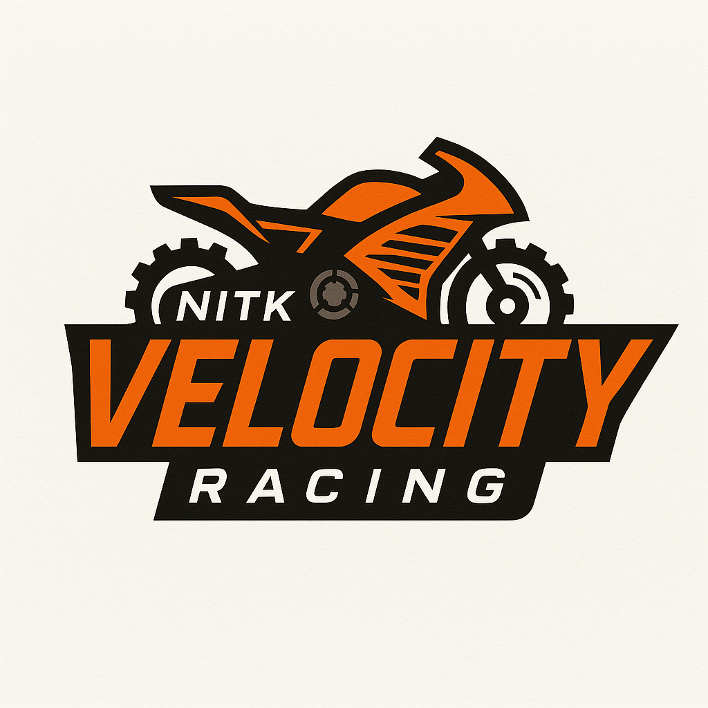

"Fueled by Speed. Driven by Passion."
"Fueled by Speed. Driven by Passion."
We are NITK Velocity Racing, a dynamic team of passionate students from NITK Surathkal.
Since 2010, our mission has been to design, build, and race performance bikes that push the limits of engineering and speed.
With over 15 years of racing legacy, we continue to innovate and compete in events across India and abroad.
Our motto, "Ride Beyond Limits," keeps us driven toward excellence.
